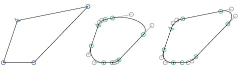

You can apply filters to the active layer in the edit view, or to any number of selected layers (with the text tool), or in the font view. The following filters come with Glyphs. Filters only affect visible layers, never all layers in a glyph.
Creates hatched letters. Distance, width and angle of the hatch-lines can be chosen. Glyphs always uses the background path as source. If there is no path, Glyphs will put a copy of the current path into the background. Alter the appearance of the hatching by changing the background path and applying the filter once again.
Changes the thickness of stems horizontally and / or vertically. The lock sign uses the horizontal value for both horizontal and vertical expansion.

Without the Make Stroke option, paths will just be moved into a parallel position:
With the Make Stroke option, selected paths will be expanded to closed outlines:

The Position setting controls the distribution of the expansion. At 0%, the path will only expand to the right. At 100%, the path will only expand to the left. At 50%, the expansion will be evenly distributed to both sides of the path. Right and left sides are determined by the path orientation.
Removes overlaps of selected paths. If no paths are selected, the filter will be applied to all paths of the selected letter(s).
Use this filter to round all selected corners of a path. To only round the outside corners, simply select nothing. Use the Visual Corrections option to create a more natural looking corner rounding. This option increases the corner radius at obtuse angles, and reduces the radius at acute angles.
From left to right: original shape, rounded shape, and rounded shape with visual corrections.
Use Transform to horizontally and vertically move, scale and tilt glyphs. Fix the origin when scaling and tilting. Tilt without optical correction by choosing Slant, or with optical correction with the Cursify option. Cursify requires correctly set vertical and horizontal stems (see also Font Info – Master).
Use Background to interpolate between front and background paths. The paths need to be compatible.
Use Metrics to set the width or the sidebearings of a letter. With the Relative option, the values will be added or subtracted.